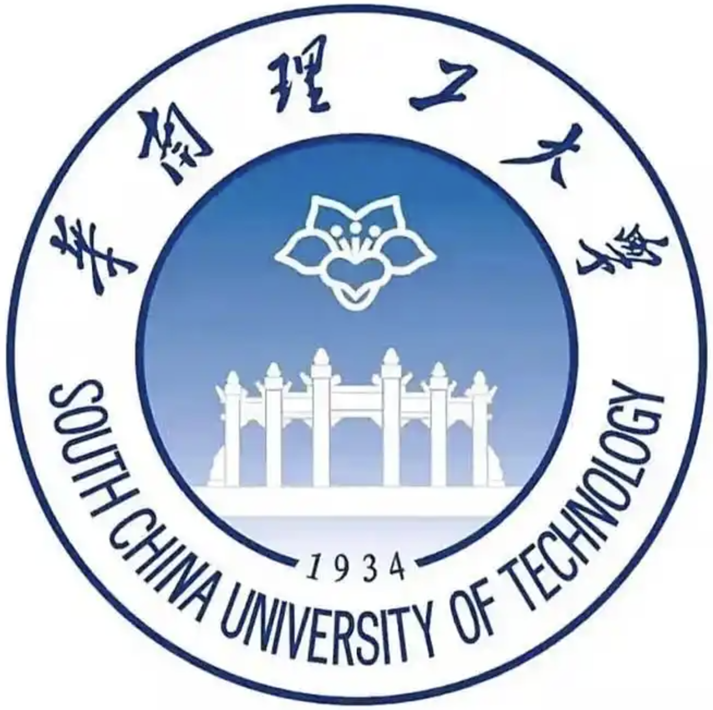

|
Tingrui Shen
I am an undergraduate student in Computer Science at South China University of Technology and an incoming master's student at Peking University.
My work focuses on 3D generation, world models, and embodied AI.
I have previously worked at Tencent and VAST, and published papers at conferences including CVPR and ACM MM. Grounded in physics as the fundamental constraint, my long-term goal is to build world models that can generate and evolve reality, and to push embodied intelligence toward real-world closed-loop deployment.
Email /
Project Page
|
|
News
[March 2026] Started my internship at VAST (Tripo3D).
[Feb 2026] FlashMesh was accepted to CVPR 2026.
[Aug 2025] Panoptic-L3D was accepted to ACM MM 2025.
[Jan 2025] Joined Tencent VISVISE Lab as a research intern.
|
Research Interests
3D Generation
Geometry, Mesh, and Scene Synthesis
I work on structured generation for 3D assets and scenes.
World Models
Simulation-Oriented Visual Intelligence
I am interested in scalable world modeling for physical and interactive environments.
Embodied AI
Perception, Action, and Data Engines
I care about systems that connect perception, action, and real-world deployment.
|
Research Experience
Dec 2025 - Present
Embodied Intelligence Research, Peking University
Sep 2025 - Present
3D Generation Research, Peking University
Aug 2023 - Present
Vision and Generation Research, SMU
Oct 2023 - Feb 2024
Multimodal LLM Research, HUST
|
Education
Incoming

Peking University
M.S. in Computer Science and Technology · Sep 2026 - Jun 2029 (expected)
Incoming master's student in Shenzhen.
Undergraduate

South China University of Technology
B.Eng. in Computer Science and Technology · Sep 2022 - Jun 2026 (expected)
GPA: 3.91 / 4.0
|
Industry Experience
Visvise AI Lab, Tencent
Jan 2025 - Nov 2025
Worked on 3D mesh generation, image-to-mesh systems, texture generation, and inference acceleration for production-oriented pipelines.
Tripo3D, VAST
Jan 2026 - Present
Exploring world models for embodied AI, with current projects on data engines and 3D scene reconstruction.
|
|

{kind=link}